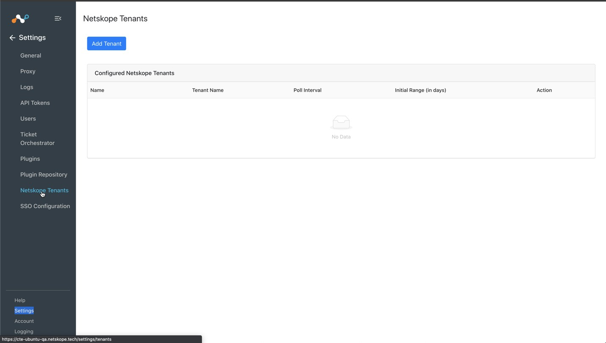
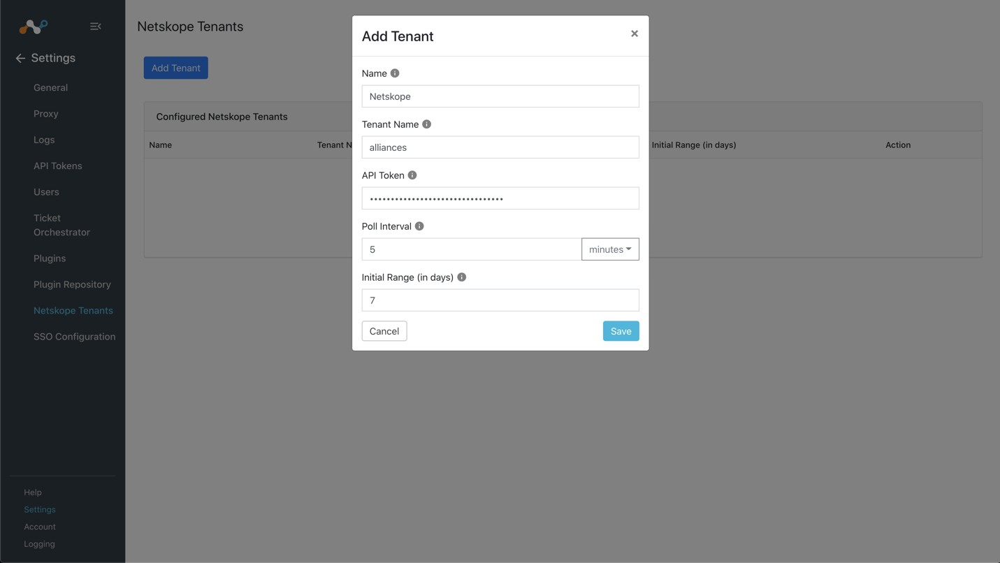
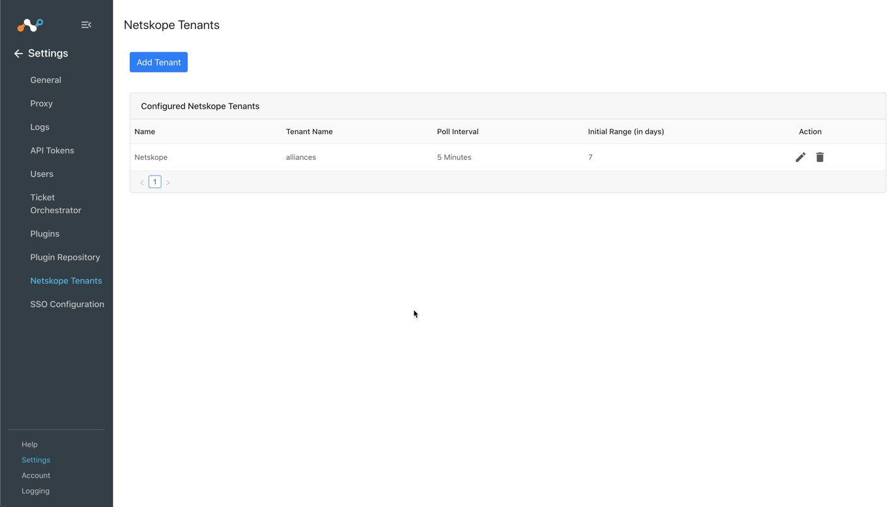
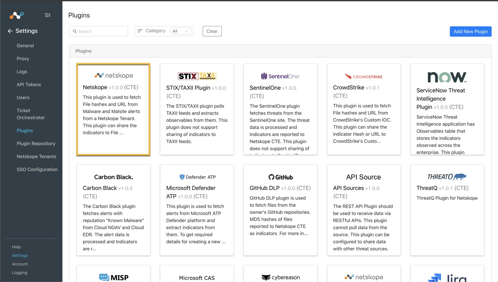
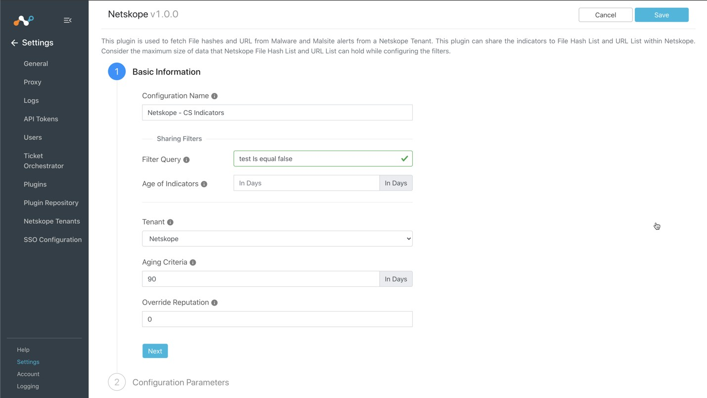
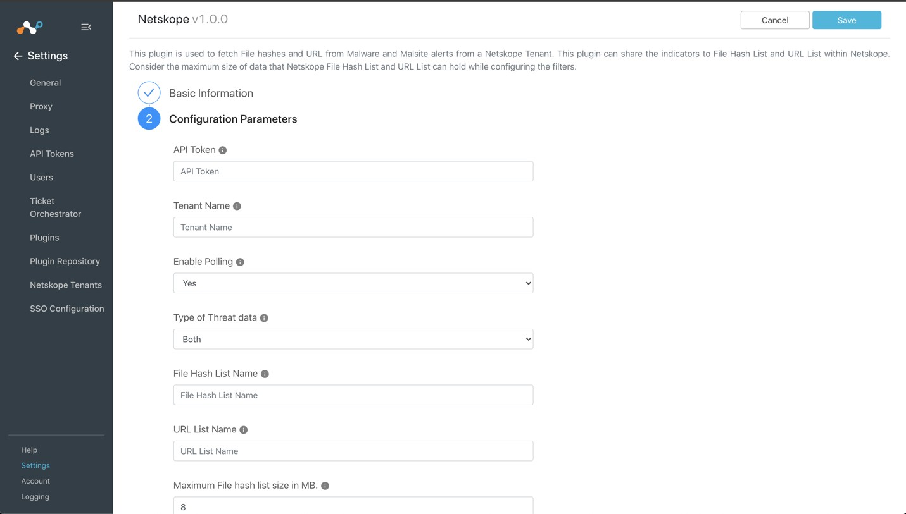
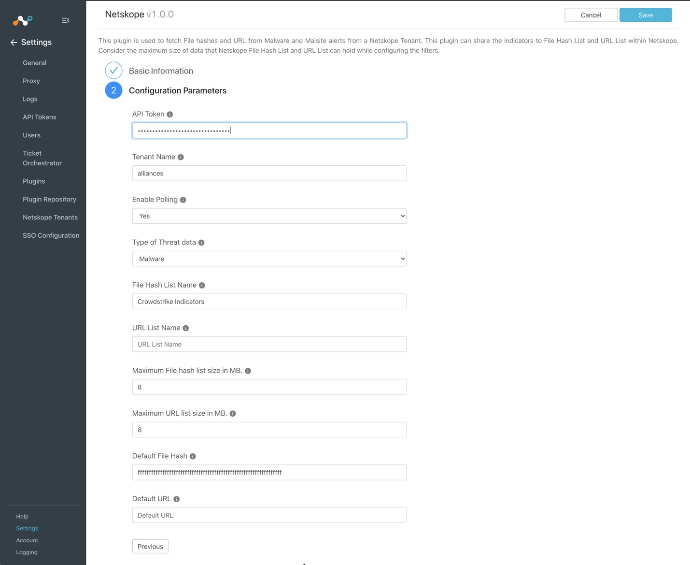
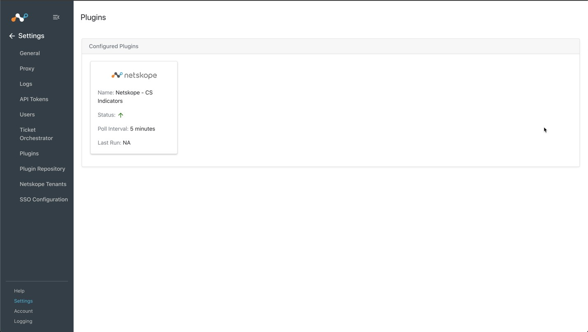

Configure the Netskope Plugin in Cloud Threat Exchange
You will need your Netskope tenant name and API token to complete this configuration.
Log in to your Cloud Threat Exchange tenant.
Go to Settings and click Netskope Tenants.
 Click Add Tenant.
Enter a Cloud Threat Exchange name for your Netskope tenant.
Enter your Netskope tenant name. Do not enter the
<tenant_name>.goskope.com, URL. Enter just your tenant. For example, if it'smycompany.goskope.com, just entermycompany. If your tenant haseuin the URL, entertenant_name.eu.Enter your Netskope tenant API token obtained previously.
Adjust your poling interval appropriate to your environment. Netskope does not support less than 5 minutes in a production environment.
Set the initial historical scope for ingesting data from Netskope. In this case, set Initial Range to 7 days to pre-populate Threat Exchange and share data with CrowdStrike.
 Click Save. Your tenant appears on the page.
 Now configure the Netskope Plugin. Go to Settings > Plugins.
Select the Netskope box to open the plugin creation pages.
 Enter and select the Basic Information on the first page:
Configuration Name: Enter a name appropriate for your integration.
Filter Query: Leave the default.
Age of Indicators: Leave the default.
Under Tenant: Choose the Tenant you added previously.
Aging Criteria: Adjust to your business needs. The default is 90 days for an indicator to be marked as inactive.
Override Reputation: Leaving the default of 0 provides all indicators from Netskope with a default value of a 5 reputation. (Reputation is a meta field that can be used for advanced sorting only).
 Click Next.
 Enter and select the Configuration Parameters on the second page:
API Token: Enter your Netskope tenant API token.
Tenant Name: Enter the Tenant Name used in step 5.
Enable Polling: Leave the default of yes.
Type of Threat Data: Select Malware.
File Hash List Name: Enter the name of your Malware Detection Profile.
URL List Name: Leave Blank
Maximum File has list size: Leave the default of 8.
Default File Hash: Use the default value to send to Netskope if there are no threats to send. (We recommend:
ffffffffffffffffffffffffffffffffffffffffffffffffffffffffffffffff)Default URL: Leave blank.
 Click Save in the top right. Go to Threat Exchange > Plugins to see your new Netskope plugin.
